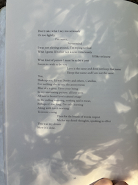

November!!
- I wore a mask at the charlotte airport and wrote in my notes app underneath the Catawba trade sign and listened to stuff wondering if you heard what I heard.
If u knew what I meant by stuff or if I did. What stuff betrays beneath the white sheet draped over the obvious couch. Obvious armoire.
- DO NOT RETURN TO THIS IN TRANQUIL REPOSE
- "I cannot consider stone without acknowledging that it is unfathomable, and this abyss of fullness, this night sheathed by eternal light, for me exemplifies the real." - Yves Bonnefoy
- Do Stones Dream?
Two hands pass over our face;
they are sifting through the sun
and the light moves like thrushes in tall grass,
gold-black and whispering.
At night,
the hands press orange into purple,
and the thrushes grow still,
give way to an ocean that remembers
its dreams unto us.
In the dim of sleep,
the water impresses itself
into the deep of the back of our eyes,
etches dark figures
which move with a warmth we cannot see.
- ^^ ... poem of mine from 2018... undercurrent resurfacing, same concerns that haunt us across time, touching a thread that a thousand others have traced, i wish we could talk about it
- how only V knew what I was saying, how I miss them now
- dark aloneness of November permeating, like being on winter break and going with my parents to the outlet mall
- It's just really interesting that both me and Bonnefoy conceive(d) of the stone as an embodiment of total darkness meeting total light, how that meeting is what gives the stone its weight
- Thinking too about Barbara Guest, ROCKS ON A PLATTER
- A hawk understands // attention too bifurcated
- Metaphysical Crashout
- I think it not but it be so -- the bats know not to fly into me
- It would be one thing if it would just lie still
- More Bonnefoy:
"We dip our bare feet in the water of dream:
How warm it is ... We cannot tell if we still wake
Or if the calm, unhurried thunderbolt of sleep
Is tracing signs already in the boughs.
Disquiet stirs the leaves: these trees
That part before our steps are too obscure
For us to recognize the figures there.
We move on. The water rises to our ankles. [this line break destroys me.]
O dream of night, hold the dream of day
In your loving hands. Tilt that face toward yours.
...
Beauty, beauty sufficient, ultimate beauty
Of the stars, meaningless and motionless.
Larger and darker than the world, the ferryman
Stands at the stern, black but phosphorescent.
A faint plash barely mars the water:
Soon it lapses into silence. Hearing the sand
That crunches under our prow, we do not know
If we have reached another shore, or still remain
In the fevered folds of our earthly bed. We do not know
If we make landfall in another world; we do not know
If hands reach out from that welcoming unknown
To take the rope we toss them from our night."
- this Bonnefoy makes me think of an excerpt from Bernadette Mayer's Midwinter Day that I read on the radio last night:

- desperately staving off eventuality
- BALK.BARK.BARQUE.BULK.BAROQUE.EMBARK.BUILDMEABOATTHATCOULDCARRYTWO.
- Scissors don't just appear in my hand.
- "In my creativity nothing is self-evident, except the compulsion to carry on." -Bergman's The Hour of the Wolf